Vertonte LernvideosNarrated capsules
Geschnitten aus den Folien und Aufnahmen der Trainer, Bild und Ton vor der Veröffentlichung geprüft.Cut from the trainers' slides and recordings, picture and audio checked before release.


Ayoub Braou · Marrakesch → Deutschland · Ausbildung 2027Ayoub Braou · Marrakech → Germany · apprenticeship 2027
IT-Techniker für digitale Infrastruktur & Cybersicherheit · Technischer Teamleiter bei CCL, MarrakeschDigital infrastructure & cybersecurity technician · Technical team lead at CCL, Marrakech
Drei Jahre Praxis in Netzwerk, Support und Hardware. Seit März 2025 leite ich ein Team von zehn Personen, das die Online-Weiterbildungen von CCL produziert. Nächster Schritt: eine Ausbildung zum Fachinformatiker für Systemintegration in Deutschland.Three years of hands-on work in networks, support and hardware. Since March 2025 I lead a team of ten that produces CCL's online training. Next step: a Fachinformatiker für Systemintegration apprenticeship in Germany.

IT-Techniker in der Praxis seit Ende 2022. Angefangen habe ich mit der Reparatur von Rechnern und der Verkabelung von Netzwerken; heute betreue ich die Infrastruktur eines Weiterbildungszentrums und leite zehn Personen.Hands-on technician since late 2022. I started by repairing workstations and cabling networks; today I run a training centre's infrastructure and lead ten people.
Bei CCL verbinde ich im Alltag das Firmennetzwerk, den direkten Support für die Mitarbeitenden, die Hardwarewartung und die Leitung eines Teams, das Online-Weiterbildungen produziert: Lernvideos, Sprachaufnahmen, Broschüren und die Betreuung der Plattform.At CCL my days mix the company network, direct staff support, hardware maintenance and the follow-up of a team that produces online training: capsules, videos, voice-overs, brochures, platform moderation.
Mein Ziel ist eine Ausbildung zum Fachinformatiker für Systemintegration in Deutschland: Deutsch heute A2, Vorbereitung auf das Goethe-Zertifikat B2, bundesweit mobil zum nächsten Ausbildungsbeginn.I am preparing for a Fachinformatiker für Systemintegration apprenticeship in Germany: German A2 today, Goethe-Zertifikat B2 in preparation, mobile anywhere in Germany from the next intake.
Keine Balken mit Prozentangaben. Zu jeder Kompetenz: die Stelle, der Arbeitgeber oder das Zertifikat, das sie belegt.No skill bars. For each skill: the job, the employer or the certificate that backs it.
Fehlerdiagnose und Störungsbehebung, Anwenderschulung, Dokumentation.Incident diagnosis and resolution, user training, documentation.
TCP/IP, LAN/WLAN, Routing und Switching, Firewalls, Windows Server und Linux, Active Directory.TCP/IP, LAN/WLAN, routing and switching, firewalls, Windows Server and Linux, Active Directory.
Installation und Administration von Linux-Servern: Dienste, Benutzer, Netzwerk, Kommandozeile.Installing and administering Linux servers: services, users, networking, command line.
Wartung und Reparatur von Laptops und Desktop-PCs, Peripherie, Kameras, Kassen und Diebstahlsicherung; Installation und Einrichtung von Servern.Maintenance and repair of laptops and desktop PCs, peripherals, cameras, tills and anti-theft systems; server installation and setup.
Penetrationstests, Risikomanagement, Forensik, Systemhärtung.Penetration testing, risk management, forensics, system hardening.
Nutzer und Rechte, Kursintegration, Quizze, Zertifikate, Lernfortschritt.Accounts and rights, course integration, quizzes, certificates, learner tracking.
Vertonte Lernvideos, Sprachaufnahmen, Drehs, Broschüren und Visuals, gemeinsam mit dem Team.Narrated capsules, voice-overs, shoots, brochures and creatives, with the team.
Meta-Kampagnen, WhatsApp-Szenarien mit CRM-Anbindung, E-Mail-Marketing, KI-Tools im Alltag.Meta campaigns, WhatsApp scenarios linked to the CRM, emailing, AI tools every day.
Aufgabenverteilung, Fortschrittskontrolle, Qualitätssicherung, Termintreue.Task allocation, tracking each person's progress, quality control, deadlines.
Werdegang · 2022 → 2026Track record · 2022 → 2026
Alles in Marrakesch: ein Institut, eine Stadtverwaltung, zwei Privatunternehmen, ein Callcenter und dann CCL, wo ich in zehn Monaten vom IT-Techniker zum Teamleiter wurde.All of it in Marrakech: an institute, a city council, two private companies, a call centre, then CCL where I went from technician to team lead in ten months.
Alle Details im LebenslaufFull details in the CV
Mai 2024 – heute · MarrakeschMay 2024 – present · Marrakech
Zertifizierte Online-Weiterbildungen · zwei Positionen nacheinanderOnline certified training · two successive positions
April – Mai 2024 · PraktikumApr – May 2024 · internship
Callcenter · Wartung des HP-Z620-Servers, der Arbeitsplatzrechner und Headsets; Installation von Vicidial auf einem Linux-Server; Netzwerk, CRM, Anwendersupport.Call centre · maintenance of the HP Z620 server, workstations and headsets; Vicidial installation on a Linux server; network, CRM, user support.
Nov. 2023 – März 2024Nov 2023 – Mar 2024
Installation von Netzwerken und IT-Systemen, Gerätewartung, Kassensysteme, Sensormatic-Diebstahlsicherung.Network and IT system installation, equipment maintenance, cash registers, Sensormatic anti-theft systems.
Aug. – Okt. 2023Aug – Oct 2023
Wartung und Neuinstallation von Systemen, Verkauf von IT-Geräten.Maintenance, system reinstalls, equipment sales.
Mai 2023 · PraktikumMay 2023 · internship
Active-Directory-Server, Firewall-Regeln, Einrichtung der Arbeitsplatzrechner, Wartung der IT-Infrastruktur.Active Directory servers, firewall rules, user workstation setup, infrastructure maintenance.
Dez. 2022 – April 2023 · PraktikumDec 2022 – Apr 2023 · internship
Netzwerkadministration und Störungsmanagement, Leitung eines Wartungsteams, IT-Unterricht für Studierende im ersten Jahr.Network administration and incident management, led a maintenance team, IT basics for first-year students.
Produziert vom Technik- und Grafikteam von CCL für CCL und Partner wie Up Skills, Master Learn und Schoolaris. Mit der Maus über ein Video fahren, um es abzuspielen; Bilder und Videos anklicken, um sie zu vergrößern.Produced by CCL's technical and design team for CCL and partners such as Up Skills, Master Learn and Schoolaris. Hover a video to play it; click any image or video to enlarge.
Geschnitten aus den Folien und Aufnahmen der Trainer, Bild und Ton vor der Veröffentlichung geprüft.Cut from the trainers' slides and recordings, picture and audio checked before release.
Ein Plakat pro Weiterbildung, angepasst für Meta-Werbung. Sechs hier, achtzehn insgesamt.One poster per programme, adapted for Meta ads. Six here, eighteen in total.


Logo, helle und dunkle Variante, Anwendung auf Verpackung, Karten und Drucksachen.Logo, light and dark versions, applied to packaging, cards and print.
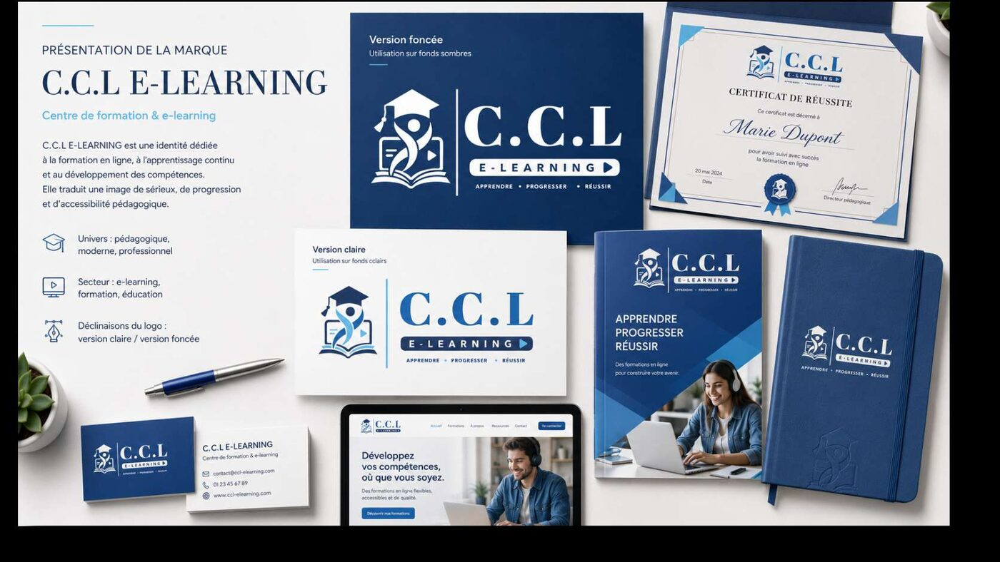
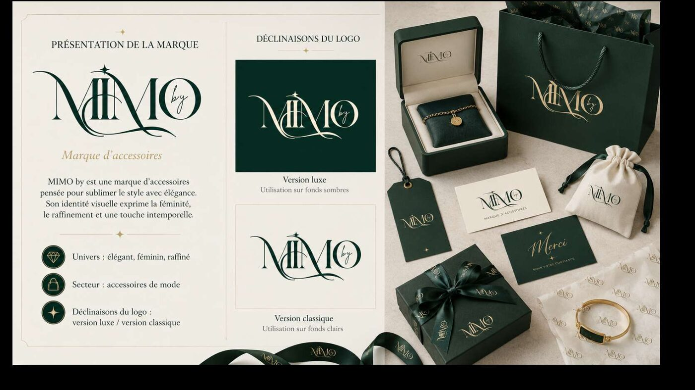
Titelbilder für Kurse und Videos, im Stil der jeweiligen Weiterbildung.Cover images for courses and videos, styled to each programme.
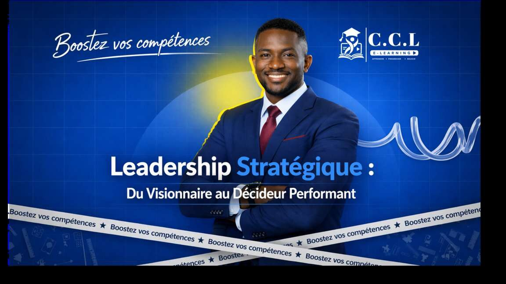
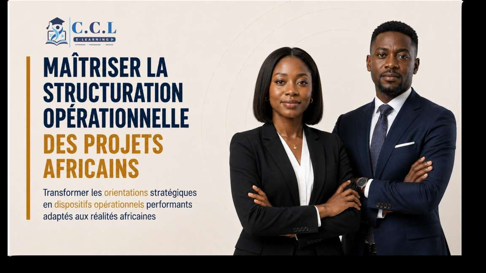
Beiträge für CCL, Up Skills, Master Learn, Vision Academy und Schoolaris: Ankündigungen, Events, Zitate, Kampagnen.Posts for CCL, Up Skills, Master Learn, Vision Academy and Schoolaris: announcements, events, quotes, campaigns.
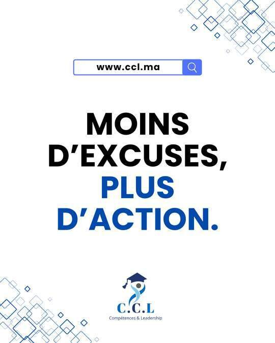
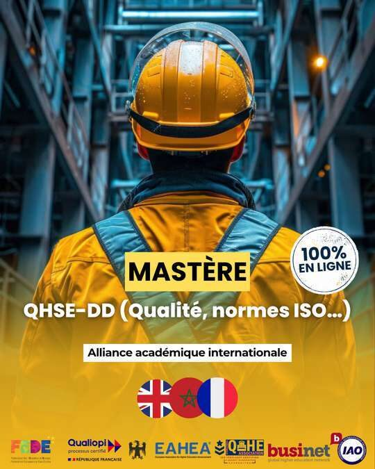
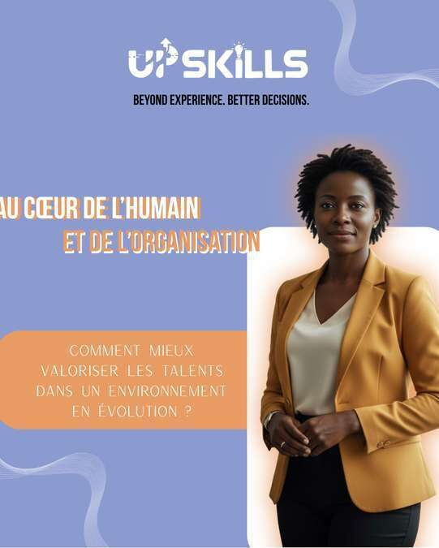
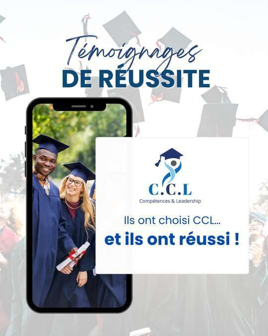
Ankündigung, Social Proof, Erinnerung: eine Weiterbildung in drei Beiträgen.Announcement, social proof, reminder: one programme in three posts.


Zwei animierte Videos pro Weiterbildung, Programm und Berufsaussichten, dazu das Launch-Reel von Schoolaris.Two animated videos per programme, syllabus and careers, plus the Schoolaris launch reel.


Executive MBA von EXEC Toulouse: zehn Seiten von der Titelseite bis zur Zulassung.EXEC Toulouse Executive MBA: ten pages, from the cover to admissions.
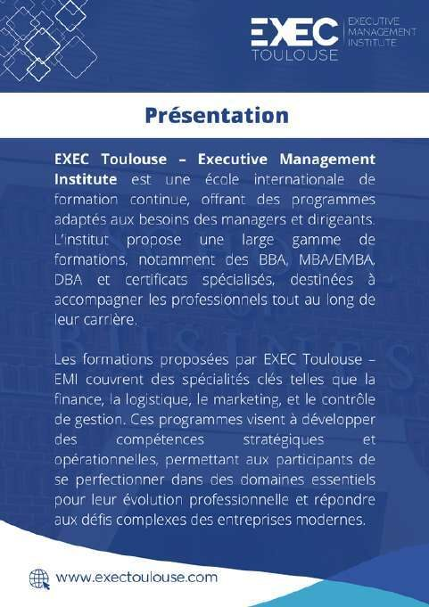
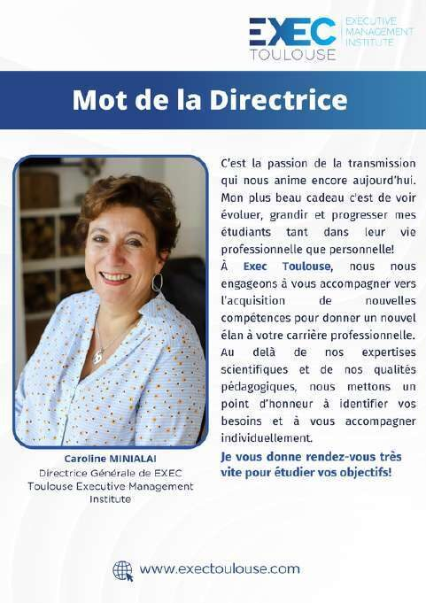
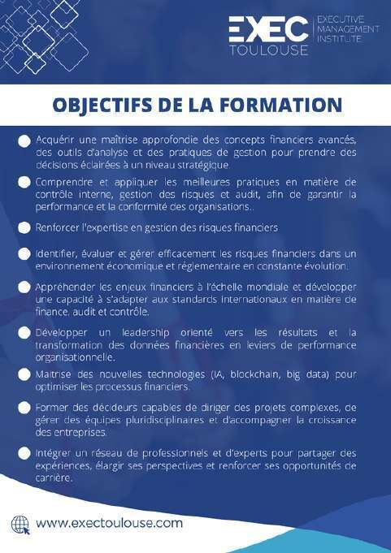
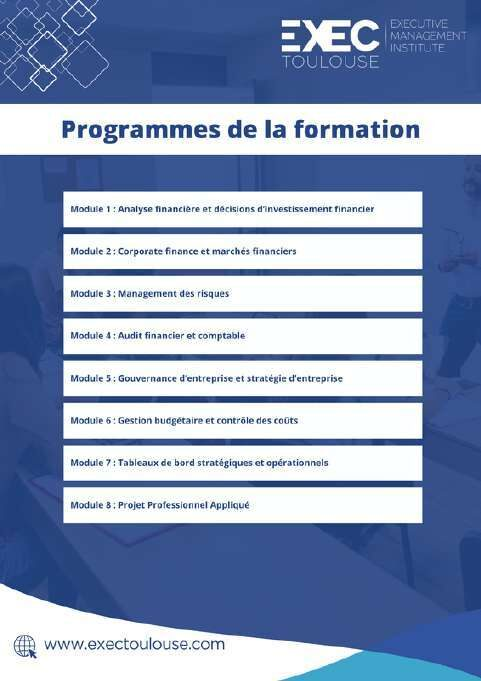
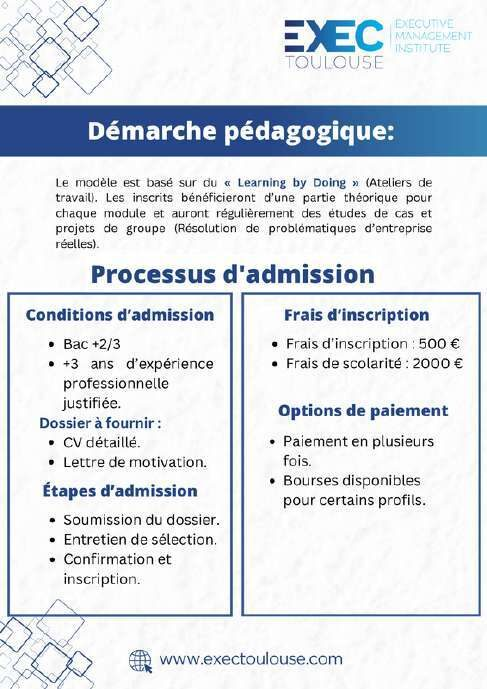
Folie für Folie gestaltet, bevor sie vertont werden. Beispiel: „Talentmanagement“, 35 Folien, für Up Skills.Designed slide by slide before narration. Example: "Talent management", 35 slides, for Up Skills.


Dieselben Präsentationen als Videokurse mit KI-Sprecherstimme, für CCL und Up Skills.The same presentations turned into video courses with AI voice-over, for CCL and Up Skills.


Ein n8n-Workflow, der Kursunterlagen in vertonte Lernvideos verwandelt, und ein KI-gestützter Kursgenerator. Screenshots aus Vertraulichkeitsgründen unscharf.An n8n workflow that turns course materials into narrated capsules, and an AI-assisted course generator. Screenshots blurred for confidentiality.


HinweiseCredits
Visuals, Videos und Tools vom Technik- und Grafikteam von CCL, dessen Fortschritt ich verfolge. Die Inhalte gehören den jeweiligen Marken: CCL, Schoolaris, Up Skills, Master Learn, Vision Academy, EXEC Toulouse, MIMO by und Le Parfum.Visuals, videos and tools produced by CCL's technical and design team, whose progress I track. The content belongs to the respective brands: CCL, Schoolaris, Up Skills, Master Learn, Vision Academy, EXEC Toulouse, MIMO by and Le Parfum.
Kurze Ausschnitte, keine internen Zahlen. Screenshots von Tools sind unscharf gemacht.Short excerpts, no internal figures. Tool screenshots are blurred.
Bac+2
ISTA NTIC SYBA, Marrakesch · 2021 – 2023 · zweijährige staatliche Fachausbildung nach dem AbiturISTA NTIC SYBA, Marrakech · 2021 – 2023 · two-year state technical programme after the baccalaureate
Für Ausbildungsbetriebe und Ausbilder: Sprachen, Verfügbarkeit und Lebenslauf auf einen Blick.For training companies and Ausbilder: languages, availability and the CV at a glance.
IT-Techniker mit drei Jahren Praxis in Netzwerkadministration, Windows Server, Active Directory, Linux, Firewalls, Anwendersupport und Hardwarewartung. Seit März 2025 technischer Teamleiter bei CCL in Marrakesch mit zehn Mitarbeitenden. Ziel: Ausbildung zum Fachinformatiker für Systemintegration. Deutsch A2, Vorbereitung auf das Goethe-Zertifikat B2. Verfügbar zum nächsten Ausbildungsbeginn, bundesweit mobil.IT technician with three years of hands-on work in network administration, Windows Server, Active Directory, Linux, firewalls, user support and hardware maintenance. Since March 2025 technical team lead at CCL in Marrakech with ten staff. Goal: Fachinformatiker für Systemintegration apprenticeship. German A2, preparing for the Goethe-Zertifikat B2. Available from the next intake, mobile anywhere in Germany.
Lebenslauf · PDFCV in German · PDFMobilitätMobility
Ich antworte auf Englisch, Französisch oder Arabisch und auf Deutsch für das Wesentliche.I reply in English, French or Arabic, and in German for the essentials.